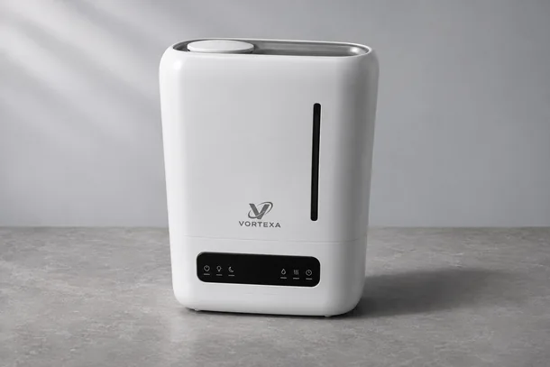

Климат
Қай модельді таңдаған жөн?
Екі бак та төрт литр су сыйдырады. Таңдау қай көрсеткішті бақылағыңыз келетініне және бөлмеге хош иіс қажет пе, соған байланысты.

25–40 м² бөлмеге арналған. Температура мен ылғалдылық экраннан көрінеді, су үстінен құйылады.
Модель туралы толығырақ
Ағынның үш деңгейі мен хош иісті майға бөлек орын бар. Цилиндр тәрізді бак тұғырынан алынады.
Модель туралы толығырақСипаттамаларды салыстыру
| Көрсеткіш | Үстінен су құйылатын | Хош иіс бөлімі бар |
|---|---|---|
| Бак | 4 л | 4 л |
| Бөлме ауданы | 25–40 м² | — |
| Ең жоғары су шығыны | 280 мл/сағ | — |
| Ағын деңгейінің саны | — | 3 |
| Алдыңғы панельде | Ылғалдылық пен температура дисплейі, жанында су деңгейінің терезесі | Дөңгелек цифрлық дисплей және сенсорлық пернелер |
| Хош иісті майға арналған бөлік | — | Бар |
| Пульт, таймер және түнгі режим | Бар | Бар |
| Ылғалдылықты ұстап тұру | Constant пернесі | Constant пернесі |
Сызықша дегеніміз — модель материалдарында бұл көрсеткіш жазылмаған. Мысалы, хош иіс бөлімі бар ылғалдандырғыштың су шығынын екіншісінің сипаттамалары бойынша есептеуге болмайды.